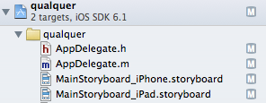
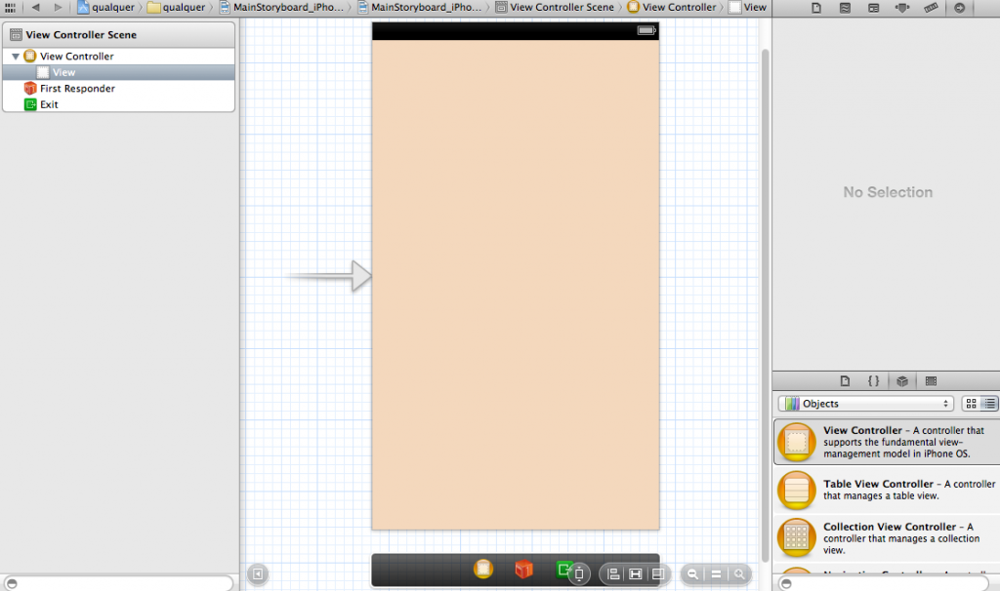
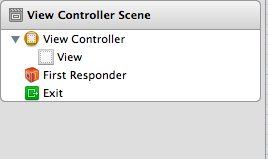
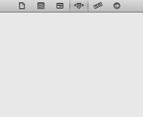
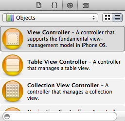
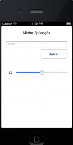

Montando a Tela Do Seu Aplicativo – Parte 1
[Este artigo faz parte de uma série de artigos para desenvolvimento IPhone, IPad e iOS. Você pode ver os demais artigos da série através da categoria Mobile]
No artigo de hoje vamos conhecer alguns objetos para nos ajudar a criar a tela de nossos aplicativos para iOS. Para conhecer eles vamos usar o projeto que criamos nos artigos anteriores. É um projeto simples do tipo Single View Application, que ainda não tem nada demais, já que estamos apenas conhecendo algumas coisas. Então nada impede que você crie outro projeto do tipo Single View Application.
Interface Builder
Como explicado no primeiro artigo, temos na estrutura que o XCode cria para nós arquivos do tipo StoryBoard. Como criamos nosso projeto com a opção Universal temos um StoryBoard para IPhone e outro para IPad, como mostra a imagem abaixo.

Ao clicar em um desses arquivos você visualiza o Interface Builder.
Vejamos por exemplo o arquivo MainStoryboard_IPhone.storyboard:
Uma pequena curiosidade aqui. As atuais versões do XCode trazem o Interface Builder acoplado ao XCode, tudo na mesma ferramenta. Em versões anteriores você tinha uma aplicação separada para isso, assim como o IPhone Simulator por exemplo.
Descrevendo rapidamente as janelas da imagem temos:
No canto esquerdo superior a Document Outline onde está aparecendo nossaView Controller Scene. É onde irá conter todos os elementos e objetos da nossa cena, da nossa tela.

No canto direito superior é onde irão aparecer os utilitários. Nesses utilitários poderemos alterar tamanhos, identificadores, conexões com funções entre outros. Você pode navegar entre os botões para encontrar essas opções.

Logo abaixo temos nossa Library de objetos, que é onde estão os objetos que vamos usar para montar nossas telas.

Repare que temos uma caixa de busca logo no rodapé. Ela vai nos ajudar a encontrar mais rápido o que queremos sem que precisar ficar rolando e rolando com o mouse em busca de algo. Caso você navegue pelos botões que aparecem em cima, você irá para outras libraries que aparecem no XCode, mas não vamos usar nenhuma delas tão cedo então não se preocupe agora.
Resumindo então:
- Document outline: Mostra os objetos da nossa cena
- Utilitários: Onde vamos alterar propiedades, características, identificadores, alinhamentos, etc…
- Library de objects: Onde os objetos estão.
Primeiros Objetos
Vamos agora conhecer 4 objetos básicos para montar nossas telas: Um botão, label, campo texto e um slider.
Esses são os objetos que mais devem surgir em seus projetos, mas claro que isso pode variar de projeto para projeto.
Botão
No campo de busca da library de objetos digite Round Rec Button. Ao começar a digitar você já vai ver o objeto surgir para você. Clique em cima dele e arraste para a sua tela. Posicione como preferir.
Você pode trabalhar o alinhamento, largura e altura diretamente com o objeto, mas se preferir pode fazer isso também pelas janelas de utilitários. O mesmo para alterar o label do botão, você pode dar um duplo clique em cima dele ou alterar pelos utilitários. Experimente essas e algumas outras opções na janela de utilitários chamada Attributes Inspector.
Label
Devolta ao campo de busca da library de objetos, dessa vez vamos buscar por label. A label é uma simples etiqueta, um texto para nos indicar alguma coisa. Da mesma maneira que o botão você pode alterar algumas de suas características diretamente sobre o elemento, ou fazer isso pelas janelas utilitárias. Tente por exemplo alterar a cor da fonte para vermelho.
Repare que ao mover diretamente os objetos pelo nosso protótipo de tela, algumas linhas quase que como réguas aparecem para te ajudar no alinhamento dos seus objetos. Use disso para manter tudo alinhado e bem distribuído.
Campo de texto
Para adicionar um campo de texto vamos devolta ao campo de busca da library de objetos, e digite Text Field. Nesse objeto o usuário poderá entrar com um texto. É aquele famoso objeto que quando ativo exibe um teclado na tela. Logo, além de todas as opções dos objetos anteriores, como cor da fonte, alinhamento, tamanho, você pode selecionar qual o tipo de teclado que o usuário irá ter disponível.
Outra opção ainda é setar um placeholder no campo de texto e tentar com isso economizar um label para explicar do que se trata aquele campo.
Slider
Um slider pode servir como marcador de alguma coisa, um projeto onde por exemplo o usuário deve entrar sua altura ou seu peso pode ser melhor apresentado com um slide. Na caixa de busca da library procure por slider.
Um detalhe é que o slider não traz um indicador de em que ponto ele está, como por exemplo 50% ou 100%. Então uma boa ideia é colocar junto do Slide uma Label para indicar esse valor.
Exercício
Com o objetos que aprendemos acima, você deve ser capaz de montar uma tela como essa:

Difícil? Vou te ajudar
Esses são os 4 objetos que temos para hoje. Achou complicado de entender? Não te culpo já que é um tema totalmente visual. Por isso estou anexando a esse artigo o vídeo abaixo que segue os passos executados no texto. Com a leitura e o visual da coisa você deve entender tudo sem problemas.
Mas, caso ainda tenha dúvidas é só mandar. Grande Abraço!
Montando a tela do seu aplicativo - Parte 1 from Flávio Silveira on Vimeo.